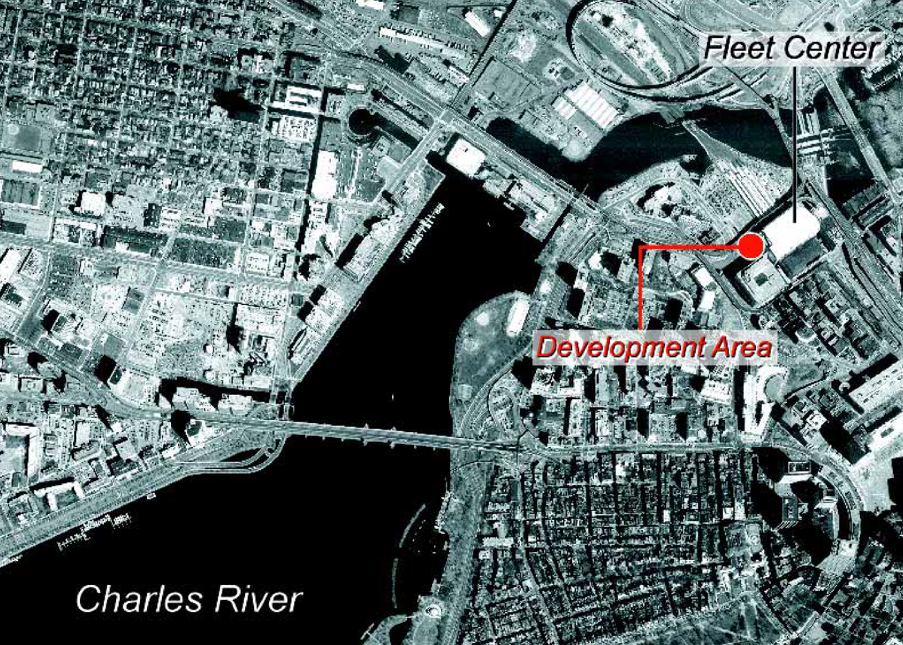
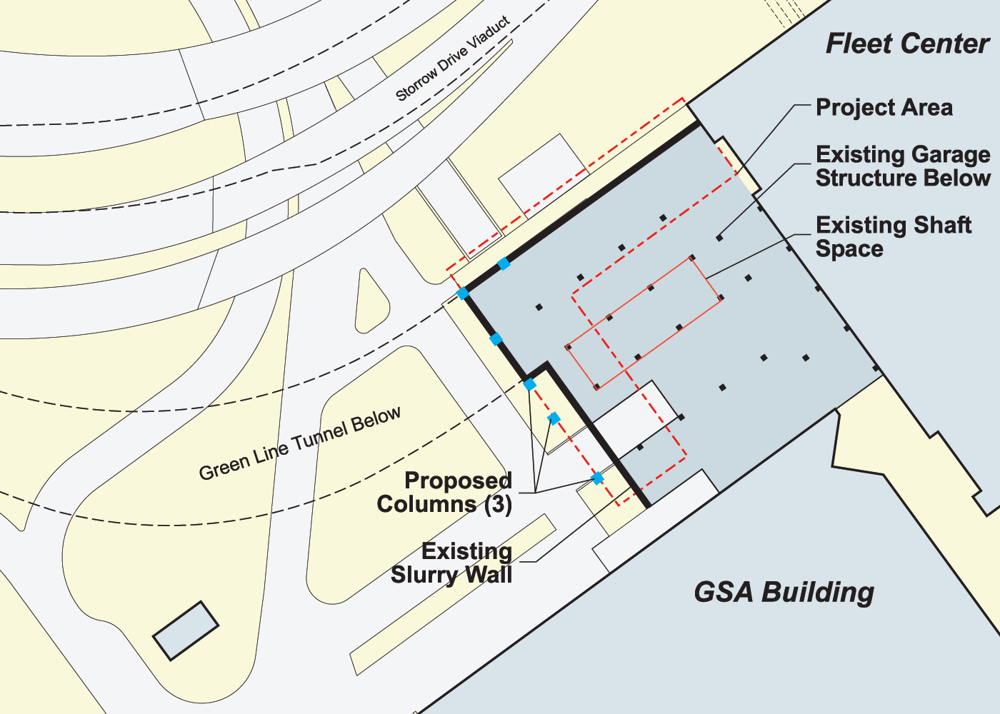
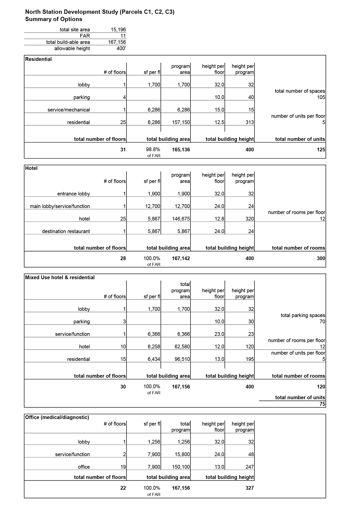

The big idea
The study asked a straightforward development question under unusually difficult physical conditions: what kinds of high-density building programs could realistically fit on the three C parcels once the site’s air-rights condition, transit infrastructure, structural constraints, easements, access, and market position were treated as one integrated design problem?
Turn residual air rights into a viable building site
Organize development above and beside existing MBTA infrastructure and transportation systems beneath and around the parcels.
Test several uses inside the same envelope
Compare residential, hotel, mixed hotel/residential, and medical or diagnostic office programs using the same allowable floor area and site constraints.
Build from what already exists
Align the structural grid with deep caisson foundations already installed on the site and preserve required pedestrian, vehicular, utility, and truck-ramp easements.
Use location as the development advantage
Leverage direct access to commuter rail, Amtrak, subway service, the Fleet Center, nearby medical facilities, downtown destinations, and upper-floor views.

Design around an exceptionally constrained site
The subject parcels total just 15,196 square feet. Air-rights development begins roughly 28 feet above finished grade, part of the MBTA parking garage lies below the site, and the parcels are crossed or bounded by access, utility, pedestrian, and truck-ramp easements. The design therefore had to begin with the site’s infrastructure and legal geometry rather than with a conventional free-standing building footprint. The study used a steel frame with concrete slab on metal deck to preserve planning flexibility and aligned the layouts with existing deep caisson foundations. Main entry, service, and delivery were assumed from New Nashua Street. Lower floors absorbed parking, mechanical, function, laboratory, or hotel-support uses where nearby viaducts limited views, while auto lifts were used in the residential and mixed-use schemes because conventional parking ramps consumed too much of the narrow site


Study framework
The work is best understood as a development test rather than a single predetermined building design. It connects zoning capacity, market positioning, structural constraints, access, parking, circulation, unit and room planning, and massing so that the feasibility of each program can be evaluated spatially. The source report documents the alternatives and their design assumptions; it does not establish that one option was selected or ultimately constructed.